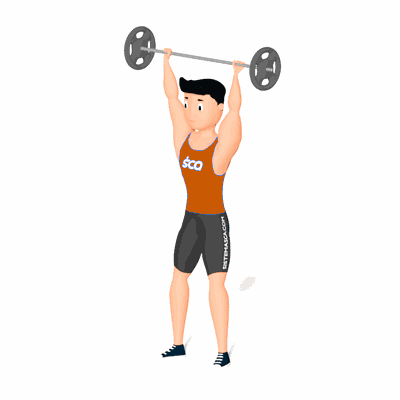

Overhead Squat

É um movimento para desenvolvimento de força e potência. Ele desenvolve a flexibilidade funcional e, ao mesmo tempo, treina a base do agachamento, punindo qualquer falha que você tenha na postura e estabilidade desse movimento.
Ficha Técnica
Tipo: CrossFit
Grupo Muscular: Corpo
Aparelho: Nenhum
Músculos: Nenhum
Como realizar
- Mantenha o bastão acima da cabeça com cotovelos completamente estendidos e travados;
- Axilas apontando para frente e para fora;
- Olhe para frente e comece o movimento de flexão de quadril e joelhos;
- Agache até que o quadril passe a linha dos joelhos;
- Mantendo a barra sempre acima da cabeça, com a amplitude bem aberta, estenda as pernas e volte à posição inicial.
 RC STORE
RC STORE